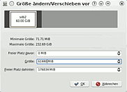

Partitionmanager
Dieser Artikel wurde für die folgenden Ubuntu-Versionen getestet:
Ubuntu 16.04 Xenial Xerus
Ubuntu 14.04 Trusty Tahr
Zum Verständnis dieses Artikels sind folgende Seiten hilfreich:
Partitionmanager  ist ein Partitionierungsprogramm für KDE. Mit Partitionmanager kann bequem die Partitionierung einer Festplatte oder eines USB-Sticks grafisch geändert werden. Dies umfasst z.B. eine Partition zu vergrößern oder verkleinern, neu anzulegen, zu verschieben oder mit einem Dateisystem zu formatieren.
ist ein Partitionierungsprogramm für KDE. Mit Partitionmanager kann bequem die Partitionierung einer Festplatte oder eines USB-Sticks grafisch geändert werden. Dies umfasst z.B. eine Partition zu vergrößern oder verkleinern, neu anzulegen, zu verschieben oder mit einem Dateisystem zu formatieren.
Allgemeine Informationen und Sicherheitshinweise zur Partitionierung findet man in diesem Artikel.
In folgenden Fällen sollte man Partitionmanager nicht verwenden:
Bei Festplatten mit einer logischen Sektorgröße von 4096 Byte. Diese Einschränkung liegt daran, dass Partitionmanager (wie auch GParted) eine Vielzahl externer Programme nutzt. In diesem Fall liegt die Einschränkung an GNU Parted und nicht an Partitionmanager. Eine Übersicht, welche externen Programme Partitionmanager nutzt, findet man hier
Bei Verwendung von "Dynamischen Laufwerken" unter Windows
Achtung!
Die Partitionierung stellt einen tiefen Eingriff in die Datenstruktur einer Festplatte dar. Das falsche Vorgehen bei der Partitionierung kann zu Datenverlusten führen! Vor Änderung der Partitionierung sollte eine Datensicherung Pflicht sein!
Installation¶
Das Programm ist in der Standardinstallation von Kubuntu enthalten. Über folgendes Paket kann es nachträglich installiert [1] werden:
partitionmanager (universe)
 mit apturl
mit apturl
Paketliste zum Kopieren:
sudo apt-get install partitionmanager
sudo aptitude install partitionmanager
Das Programm findet sich nach der Installation im:
Anwendungsstarter-Menü: "Programme -> System -> Partition Editor"
Klassischen Menü: "System -> KDE Partitionmanager (Partition Editor)"
Je nach Dateisystem sind folgende Pakete zusätzlich zu installieren:
jfsutils
reiser4progs
reiserfsprogs
xfsprogs
hfsprogs
mit apturl
Paketliste zum Kopieren:
sudo apt-get install jfsutils reiser4progs reiserfsprogs xfsprogs hfsprogs
sudo aptitude install jfsutils reiser4progs reiserfsprogs xfsprogs hfsprogs
Oberfläche¶
Oben links, im Panel Geräte, werden alle gefundenen Festplatten angezeigt. Klickt man auf einen Eintrag, sind rechts alle Partitionen dieser Festplatte zu sehen. Einmal als Textliste und oberhalb davon als grafische Darstellung.
Unterhalb befindet sich das Fenster Ausstehende Operationen, das die geplanten Änderungen beinhaltet. Direkt nach Programmstart ist dieses Fenster noch leer.
Erst planen, dann ausführen¶
Wer die Partitionierung ändern möchte sollte sich im Klaren darüber sein, welche Partitionen in welcher Größe auf der Festplatte enthalten sein sollen. Damit stehen auch die einzelnen Schritte zur Erreichung der neuen Partitionierung fest. Partitionmanager legt für jeden einzelnen Schritt einen Eintrag im Fenster Ausstehende Operationen an und zeigt die Veränderung im grafischen Teil.
Man kann entweder jeden Schritt sofort anwenden, oder alle Schritte erst einmal in der Liste sammeln und am Ende "in einem Rutsch" von Partitionmanager durchführen lassen.
Hat man sich einmal bei einem Schritt vertan, so kann man
entweder den Schalter "Rückgängig" betätigen (Dies löscht den letzten Schritt aus der Liste)
oder den Schalter "Leeren" betätigen (Dies löscht alle geplanten Schritte und man kann wieder ganz neu beginnen)
Benutzung¶
Allgemeine Hinweise¶
Partitionmanger verwendet für Größenangaben die Einheit MiB (Mebibyte). Möchte man z.B. eine 20GiB Partition erstellen, so muss der Wert 20480 (20 x 1024 = 20480) eingegeben werden.
Analog zum Artikel Manuelle Partitionierung wird die Vorgehensweise der Partitionierung an einem Beispiel erklärt. Dieses Beispiel geht davon aus, dass man Linux zum ersten Mal auf eine Festplatte installieren möchte.
Hinweis:
Bevor man Änderungen an den Partitionen/Datenträgern durchführen kann, müssen diese zunächst ausgehängt werden. Eingehängte Datenträger sind an dem Schlosssymbol zu erkennen. Das Aushängen funktioniert grundsätzlich über einen  auf den entsprechenden Eintrag und die Auswahl des Punktes "Einbindung lösen".
auf den entsprechenden Eintrag und die Auswahl des Punktes "Einbindung lösen".
Zielbeschreibung¶
Das Zielsystem wird diese Partitionen beinhalten:
| Partition für | Bezeichnung beim Partitionieren | Bezeichnung im jeweiligen System | Größe | Was muss gemacht werden? | |
| ungenutzt | - | - | 1MB | - | |
| Bootpartition von Windows | sda1 | - | 100MB | - | |
| Windows | sda2 | C: | 100GB | Partition verkleinern | |
| Erweiterte Partition | darin: | sda3 | - | Kompletter Rest der Platte | neu anlegen |
| Auslagerungspartition von Linux | sda5 | /swap | Siehe Swap | neu anlegen | |
| Betriebssystem Linux | sda6 | / | ca. 10GB - 15 GB | neu anlegen | |
| Partition für "eigene Dateien" und Programmeinstellungen von Linux | sda7 | /home | Der Rest der Platte | neu anlegen | |
Hinweis:
Den ersten Bereich (ungenutzt/1MB) zeigt Partitionmanager nicht an! Partitionmanager orientiert sich bei der Anzeige an den Zylindergrenzen und stellt Partitionen erst ab einer Größe von 16MiB dar.
Eine ausführliche Zielbeschreibung und Hilfe zu den Größenangaben findet man im Artikel Manuelle Partitionierung - Vorüberlegungen. Hinweise zur Vorbereitung der Windowspartition, findet man in diesem Abschnitt.
Eine Partition verkleinern¶

Um Platz für die gewünschten Partitionen zu schaffen, muss die Windowspartition verkleinert werden. Im Partitionmanager wählt man die entsprechende Partition aus und öffnet per das Kontextmenü. Hier wählt man den Punkt "Größe ändern/Verschieben". Im folgenden Fenster kann nun bei "Größe" der gewünschte Wert eingetragen werden.
Nach  auf "OK " erscheint nun im unteren Fenster der erste Punkt, den Partitionmanager durchführen soll.
auf "OK " erscheint nun im unteren Fenster der erste Punkt, den Partitionmanager durchführen soll.
Hinweis:
Das Anwenden dieses Schrittes dauert in der Regel sehr lange. Siehe Änderungen anwenden
Eine erweiterte Partition anlegen¶
In dem nun geschaffenen Platz wird eine erweiterte Partition angelegt. Diese dient als Container für die restlichen Partitionen und muss dementsprechend über den ganzen zur Verfügung stehenden Bereich angelegt werden.
- auf den nun als "nicht Belegt" angezeigten Bereich
"Neu" auswählen
Im angezeigten Fenster (siehe Bild rechts) "Erweitert" wählen
Die Größe sollte schon der Maximalgröße entsprechen
"OK"
Der neue Schritt für die Erstellung der erweiterten Partition erscheint nun im unteren Fenster. In der grafischen Anzeige wird die erweiterte Partition als grüner Balken angezeigt.
Eine logische Partition für /swap erstellen¶

Als nächstes wird die Swap-Partition angelegt. Dies geschieht ähnlich wie das Anlegen der erweiterten Partition:
- auf den als "nicht Belegt" angezeigten Bereich
"Neu" auswählen
Einstellungen wie im Bild rechts zu sehen vornehmen (Dateisystem "Linux-Swap")
Größe entsprechend anpassen (hier: 2GiB)
"OK"
Die Erstellung der Partition wird nun zu den anderen Schritten im unteren Fenster hinzugefügt.
Eine logische Partition für das System erstellen¶
Nun fehlt noch die Partition für das Betriebssystem Linux:
- auf den als "nicht Belegt" angezeigten Bereich
"Neu"
Als Dateisystem entweder
ext3oderext4auswählenGröße den eigenen Vorstellungen anpassen
"OK"
Nun fehlt noch die Erstellung der /home-Partition
Eine logische Partition für /home erstellen¶
Dieses erfolgt analog zum vorherigen Abschnitt
Nachdem die letzte Partition angelegt wurde, können alle Schritte durch auf Anwenden wirklich auf die Festplatte geschrieben werden.
Label vergeben¶
Um ein entsprechendes Label zu ändern ist es nötig, die Partition zunächst einmal auszuhängen. Dies geschieht mittels auf den entsprechenden Eintrag entweder grafisch oder aus der Tabelle und der Auswahl des Punktes "Einbindung lösen". Hiernach wählt man wiederum mittels den Eintrag "Eigenschaften" und hat nun den Menüpunkt "Bezeichnung:". Nach Eingabe des gewünschten Namens wird dies durch einen Klick auf OK gespeichert.
Hinweis:
Labels für FAT-formatierte Datenträger werden ab Version 1.1.0 unterstützt.
Partitionen kopieren¶
Partitionmanager stellt auch die Option für das Kopieren einer ganzen Partition zur Verfügung. Hierbei ist Folgendes zu beachten:
Es muss eine Partition in mindestens der gleichen Größe wie die der zu kopierenden Partition vorhanden sein.
Achtung!
Partitionmanager überschreibt die Zielpartition komplett. Eventuell vorhandene Daten werden dabei zerstört.
Es kann auch ein unpartitionierter Bereich für die Kopie verwendet werden.
Ein gleichzeitiges Verkleinern ist nicht möglich
Ein gleichzeitiges Vergrößern ist möglich
Das Kopieren dauert sehr lange: Für eine Partition von 90GB mit 30,5GB Daten wurde ca 1 Stunde benötigt. Das Kopieren von NTFS-formatierten Partitionen dauert in der Regel nicht so lange.
Die Kopie erhält das gleiche Label wie die Ursprungspartition. Somit sind zwei Partitionen mit dem gleichen Label auf dem System vorhanden. Wer seine Partitionen z.B. in der /etc/fstab per
LABEL=eingebunden hat, sollte das Label nachträglich ändern, oder die Platte mit der Kopie vor dem nächsten Reboot abklemmen.Hinweis:
Partitionmanger erstellt für die Kopie eine neue UUID. Datenträger, die per /etc/fstab eingebunden werden, sollten deshalb stets mit der Option
UUID=anstattLABEL=aufgeführt sein.
Änderungen anwenden¶
Jeder geplante Schritt wird von Partitionmanger im Fenster Ausstehende Operationen angezeigt und erst nach auf "Anwenden" wirklich auf die Festplatte geschrieben. Je nach Art der Änderung kann die jeweilige Operation sehr lange dauern. Dies trifft insbesondere auf folgende Fälle zu:
Verkleinern einer Partition
Kopieren einer Partition
Es ist durchaus normal, dass Partitionmanager hierbei eine Zeit lang "still" zu stehen scheint.
Links¶
- Erstellt mit Inyoka
-
 2004 – 2017 ubuntuusers.de • Einige Rechte vorbehalten
2004 – 2017 ubuntuusers.de • Einige Rechte vorbehalten
Lizenz • Kontakt • Datenschutz • Impressum • Serverstatus -
Serverhousing gespendet von